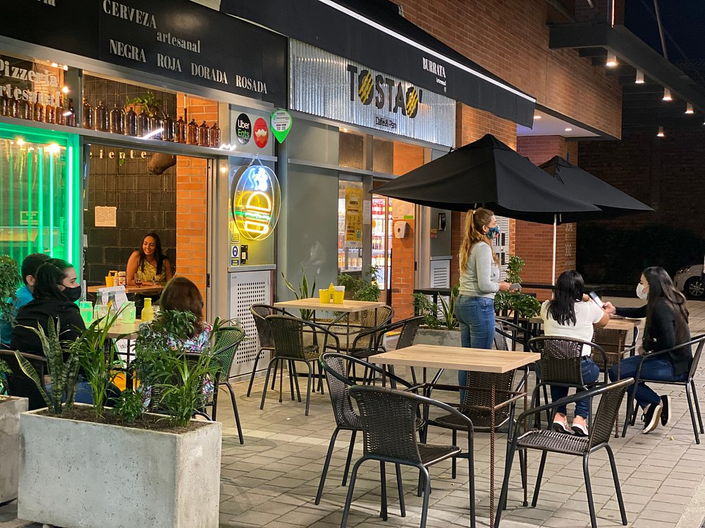

Restaurantes Destacados

Fonda Itagüí
Ambiente tradicional con música en vivo y platos típicos que representan la cultura paisa.

Sabores Modernos
Un lugar donde la cocina contemporánea se encuentra con los ingredientes locales.

La Parrilla del Parque
Carnes al carbón y postres caseros frente al parque principal de Itagüí.
Café Artesanal
Un espacio acogedor para disfrutar del mejor café local acompañado de repostería artesanal.